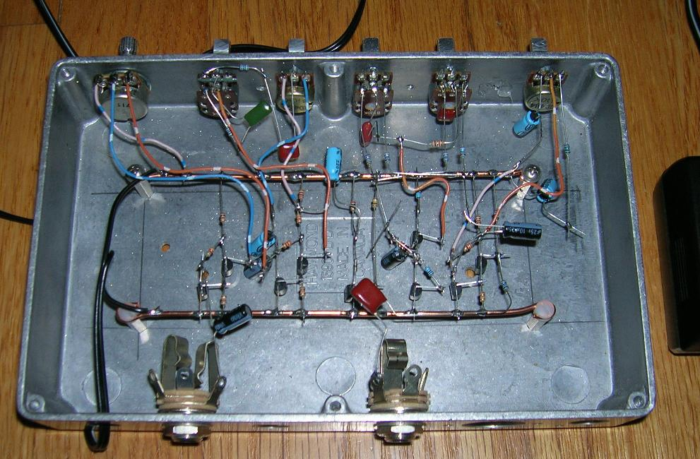
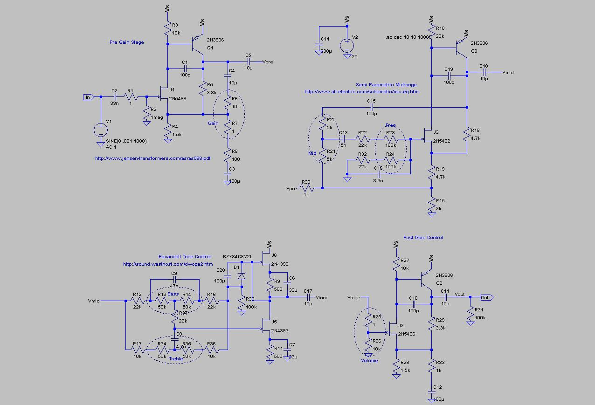

I enjoy looking at schematics for historical bass amps. It's interesting to look for possible relationships between the sound of amps, as described by bassists, and how they're actually designed.
Naturally it's impossible to overlook famous amps like the Ampeg SVT. The SVT actually looks like it was designed as a basic high fidelity amplifier, albeit using tubes at a time when solid state amps were making great strides.
So I decided to explore the idea of a preamp with similar functionality, but using JFETs instead of tubes. My circuit has: Gain, bass and treble, swept midrange, and an output volume control. It actually sounds quite good, but I'm on the fence about whether it deserves to be a product. Meanwhile, here are some details, including a picture of my hand built prototype. Not shown is a regulated power supply at about +20 Volts derived from a 24-Volt wall adapter.
Each of the 4 stages is based on a published circuit. You get to enjoy the puzzle of converting op amp circuits to their discrete equivalents.

